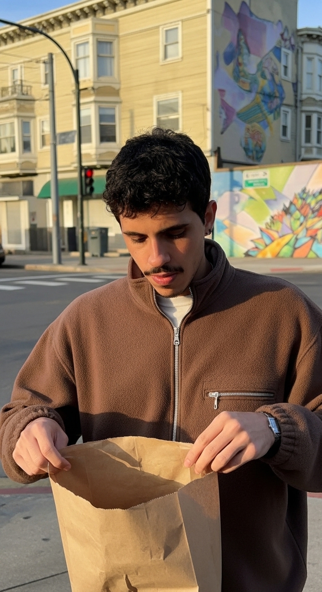

TROPHÉ · Apresentação Institucional de Tecnologia & Front-Office
A Infraestrutura que estanca os vazamentos e transforma o seu consultório em uma operação previsível.
Desenvolvida especificamente para clínicas particulares em Matão e região. Integração proprietária em 4 camadas: captação qualificada, triagem relâmpago, protocolo anti-falta e motor contínuo de retenção da base.
Captação de Alta Intenção
Triagem Anti-Curioso
No-Show Shield
Ciclos de Retorno 180d

Lucas Fernandes
Founder · TROPHÉ Growth Clínico
Navegue usando
←
→
ou os controles abaixo